The commercial and industrial (C&I) sector stands at a critical inflection point. With rising electricity costs, growing sustainability mandates, and improving battery economics, the combination of solar photovoltaic (PV) systems and Battery Energy Storage Systems (BESS) has evolved from a niche consideration into a strategic business imperative. This integrated approach transforms how businesses manage energy—from reactive consumption to intelligent, predictive optimization that simultaneously reduces costs, enhances resilience, and accelerates decarbonization goals.
The C&I Solar + BESS Opportunity: Market Momentum and Scale
The market fundamentals are compelling. The global C&I BESS market was valued at $3.18 billion in 2023 and is projected to reach $10.88 billion by 2030, representing a compound annual growth rate (CAGR) of 20.1%. Meanwhile, the containerized BESS segment—a key format for C&I deployments—is expected to expand from $13.87 billion in 2025 to $35.82 billion by 2030, growing at a CAGR of 20.9%.
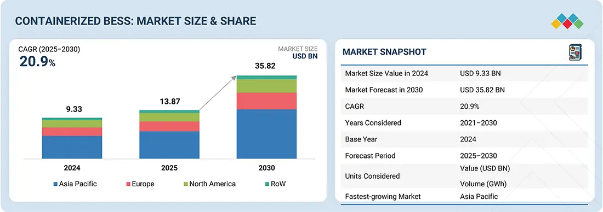
This explosive growth reflects a fundamental shift in market dynamics. C&I facilities, which account for over 50% of India's total electricity consumption and represent a similarly dominant share in developed markets, are rapidly recognizing that solar + storage integration delivers tangible financial returns alongside environmental benefits. Unlike earlier generations of battery technology, modern LiFePO₄-based systems offer long lifespans (10+ years), high cycle efficiency, inherent safety features, and declining capital costs that make the investment economics increasingly compelling.
How C&I Solar + BESS Systems Create Value
The value proposition of integrated solar + BESS extends far beyond simple energy arbitrage. Modern C&I systems operate across multiple simultaneous value streams, enabling what industry experts' term "co-optimization."
Peak Shaving and Demand Charge Reduction: For most commercial and industrial facilities, demand charges—fees based on peak consumption periods rather than total energy use—can constitute 40 to 70% of monthly electricity bills. C&I solar + BESS systems address this through strategic "peak shaving": the system stores excess solar generation during moderate-demand periods and discharges stored energy during high-cost peak hours, effectively reducing the facility's instantaneous draw from the grid. This single application alone can deliver payback periods as short as 4 to 10 years, depending on local tariff structures and facility load profiles.
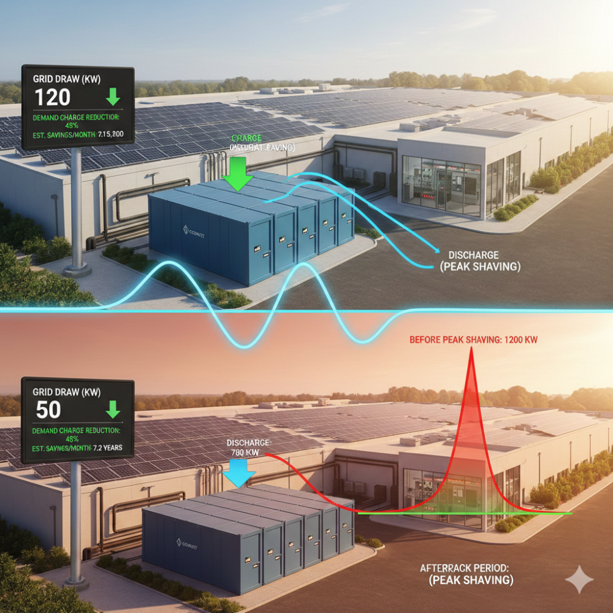
Time-of-Use (TOU) Optimization: In regions with time-based electricity pricing, BESS enables businesses to exploit favorable tariff differentials by charging batteries during low-cost periods (typically nights or weekends) and discharging during high-cost periods. For facilities with flexible operating schedules, this optimization layer compounds cost savings beyond peak shaving alone.
Renewable Self-Consumption and Curtailment Reduction: On-site solar generation without storage typically underperforms, particularly when peak generation (midday) misaligns with facility demand patterns. By integrating BESS, businesses capture excess daytime solar generation that would otherwise be exported to the grid at depressed rates or curtailed entirely. The system enables a "generate-store-use" model where solar energy is stored during high-generation windows and deployed when needed, maximizing the economic value of the PV investment and dramatically improving solar ROI.
Resilience and Backup Power: Beyond cost optimization, C&I solar + BESS systems provide uninterrupted power supply (UPS) functionality, critical for data centers, manufacturing facilities, hospitals, and other mission-critical operations. Modern systems offer switching times under 10 milliseconds, ensuring continuous operation during grid outages. For industries where downtime costs tens of thousands of dollars per minute—semiconductors, pharmaceuticals, financial services—BESS functions as essential insurance against operational disruption.
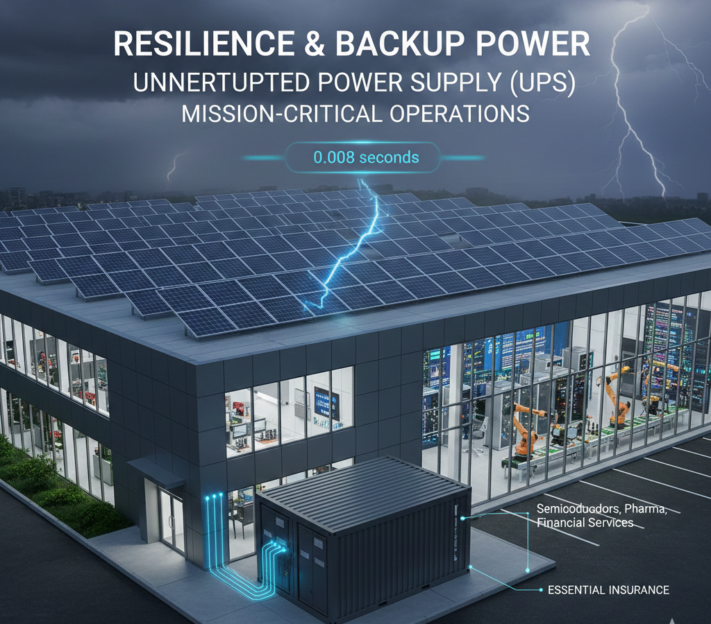
Grid Services and Demand Response Revenue: In advanced energy markets, behind-the-meter (BTM) BESS systems can participate in demand response (DR) programs and provide ancillary services such as frequency regulation and load balancing. Utilities increasingly compensate businesses for reducing consumption during peak demand events or providing grid stability services during contingencies. While market participation rules vary significantly by geography, this revenue stream—when available—can materially accelerate system payback periods and improve overall project economics.
System Architecture and Design Considerations
C&I solar + BESS configurations vary substantially based on facility requirements, local grid conditions, and business objectives. Understanding these architectural options is essential for optimizing project outcomes.
AC-Coupled vs. DC-Coupled Configurations: AC-coupled systems (the predominant architecture for retrofits) connect the solar inverter and battery inverter through the alternating current (AC) bus. This topology offers flexibility and modularity but introduces conversion losses at each component. DC-coupled systems connect solar panels directly to battery storage through a charge controller, eliminating an inverter stage and improving efficiency, though they typically require simultaneous design of PV and storage components.
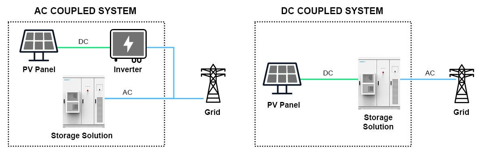
System Sizing: Capacity vs. Power: Effective C&I system design requires careful matching of storage capacity (energy in kilowatt-hours, or kWh) and power rating (kilowatts, or kW). A system undersized on capacity cannot store sufficient energy for peak shaving during extended high price periods, under sizing on power limits the instantaneous discharge rate during demand peaks. Optimal sizing requires detailed load profiling, local tariff analysis, and weather-dependent solar generation modeling.
Hybrid System Integration: For facilities with existing backup generators, solar + BESS systems can intelligently coordinate with diesel gensets through hybrid power controllers. In off-grid or islanded scenarios, the system prioritizes solar charging first, then charges from the genset only when necessary, substantially reducing fuel consumption and operational costs.
Modular and Scalable Architectures: Leading C&I systems employ modular battery pack designs and containerized configurations that enable capacity expansion without complete system redesign. This modularity aligns with business growth and allows phased investment, reducing capital constraints while maintaining upgrade pathways. Systems from major vendors scale from 30 kW to 30+ MW, accommodating everything from small commercial buildings to large industrial facilities.
Key Applications Driving C&I Adoption
Manufacturing and Industrial Facilities: Manufacturing plants face intense pressure to optimize energy costs while maintaining production reliability. Solar + BESS systems enable peak shaving on energy-intensive processes, support electrification of equipment previously powered by natural gas or diesel, and provide resilience against grid disruptions that would otherwise halt production lines. A North American automotive parts manufacturer reported a 27% reduction in monthly energy bills following a 2.5 MWh lithium-ion battery installation.
Data Centers and Colocation Facilities: Data centers represent an emerging frontier for C&I solar + BESS deployment. These facilities consume enormous quantities of electricity—roughly 3% of global electricity supply—with substantial portions used for cooling infrastructure. Solar + BESS integration offers data centers a pathway to 24/7 renewable power operation, reduced carbon intensity, and improved resilience. Major hyperscalers including Google and Apple have already integrated solar generation with energy storage at multiple facilities, demonstrating both technical feasibility and economic viability.
EV Charging Infrastructure: The intersection of solar + storage and electric vehicle (EV) charging has emerged as particularly compelling. A standalone solarized EV charging station designed for JBM Group integrated 242 kW of solar capacity with 762 kWh of BESS and a 50-kW charger, enabling 100% renewable charging of a vehicle fleet with minimal grid interaction. BESS integration at charging stations enables peak shaving, load balancing across multiple simultaneous charging events, and cost reduction through off-peak charging—critical for scaling distributed EV infrastructure without extensive grid upgrades.
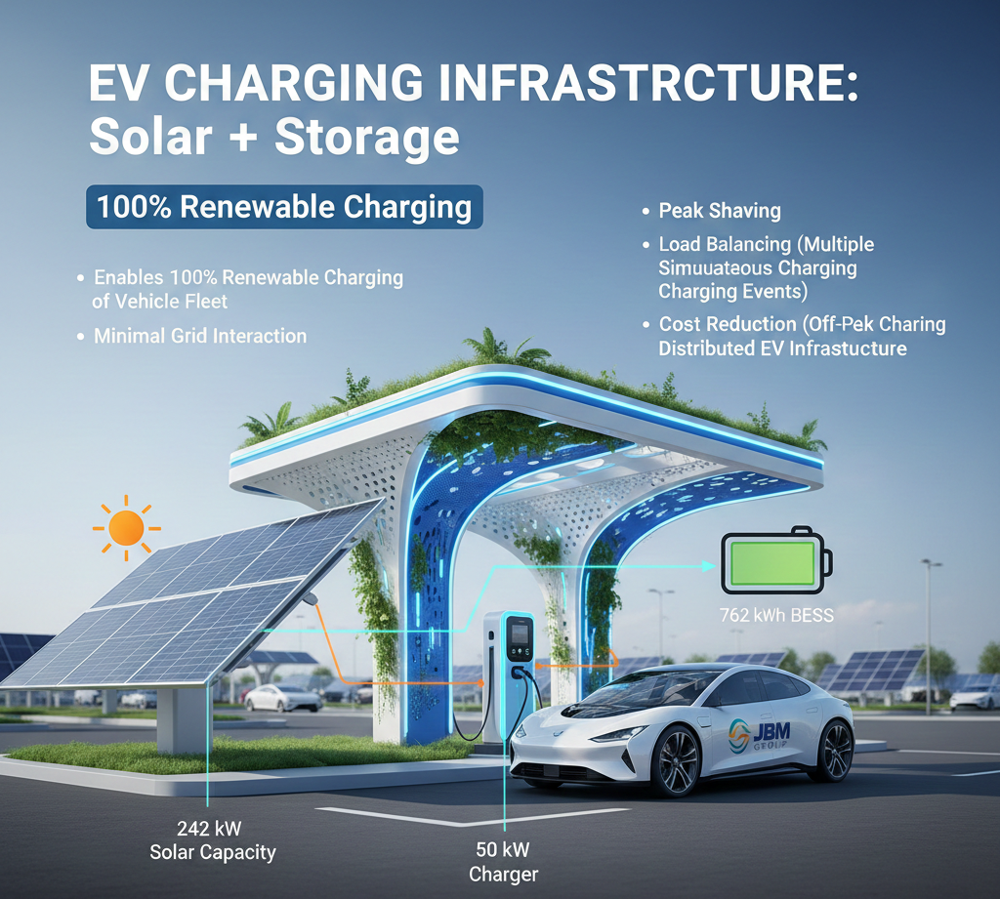
Hospitals, Educational Institutions, and Critical Facilities: Healthcare facilities and schools require uninterrupted power for life safety systems, climate control, and mission-critical equipment. Solar + BESS integration provides these institutions with both cost savings through peak shaving and grid-independent backup power during outages. For hospitals, the combination prevents patient care disruptions; for schools, it ensures climate control continuity and demonstrates sustainability leadership to students and communities.
Warehouses and Cold Storage: Temperature-sensitive storage facilities rely on continuous refrigeration and face severe financial penalties if cooling systems fail. Solar + BESS integration ensures uninterrupted operation during grid outages while substantially reducing operating electricity costs—particularly valuable for facilities with high nighttime cooling loads that can be optimized through BESS discharge during peak pricing periods.
Economic Analysis and ROI Drivers
Understanding the financial drivers of C&I solar + BESS projects is essential for evaluating investment merit. The economics vary significantly based on local utility rate structures, system sizing, incentive availability, and operational flexibility.
Critical ROI Variables The return on investment for C&I solar + BESS depends on multiple interconnected factors:
Payback Period Analysis: Depending on facility characteristics and incentive programs, C&I solar + BESS payback periods typically range from 4 to 10 years. At the favorable end of this spectrum are facilities with high peak demand charges, significant peak-time consumption, generous local incentives, and opportunities for grid service participation. At the less favorable end are facilities with relatively flat consumption patterns, modest local incentives, and limited demand charge exposure.
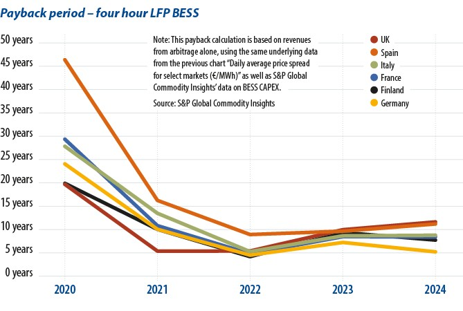
The ideal payback threshold for C&I systems—less than 10 years—reflects the expected operational life of modern LiFePO₄ systems and aligns with typical facility capital planning horizons.
Policy Environment and Incentive Landscape
Government support—through tax credits, grants, rebates, and favorable tariff policies—plays a material role in C&I solar + BESS economics and project development velocity.
United States Federal Incentives
The U.S. federal Investment Tax Credit (ITC), now locked at 30% through 2032 under the Inflation Reduction Act, allows businesses to deduct 30% of eligible project costs from federal income tax liability. This credit applies to both solar PV and battery storage, with stacking prohibited (systems cannot claim the credit twice). Additional bonuses can increase the effective credit to 50%:
- Energy community bonus: +10% for projects in fossil-fuel-dependent regions
- Domestic content bonus: +10% for systems meeting U.S. manufacturing content thresholds
- Low-income community bonus: up to +20% for projects serving disadvantaged communities
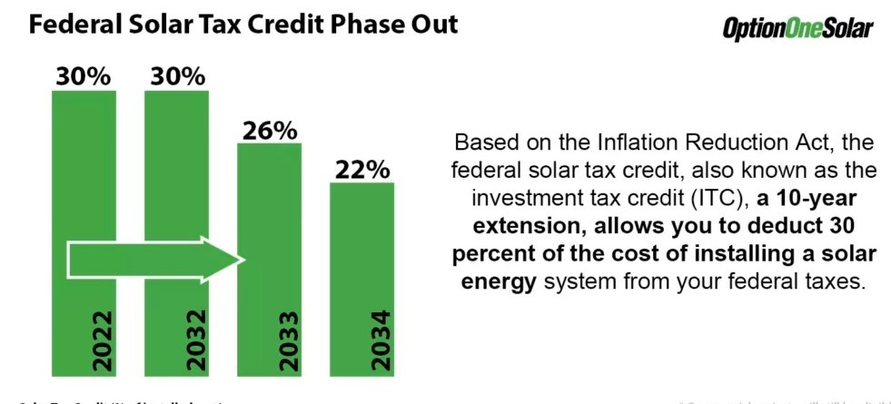
Projects exceeding 1 megawatt must satisfy prevailing wage and apprenticeship requirements to claim the full 30% credit; failure to meet these labor standards reduces the credit to 6% (down 80%).
State and Regional Programs
State-level incentives vary substantially but often include:
- Self-Generation Incentive Program (SGIP) in California: Direct rebates for storage and resilience upgrades
- NYSERDA C&I programs in New York: Targeted incentives for commercial and industrial storage
- Wisconsin Focus on Energy: Rebates for commercial renewable energy and efficiency projects
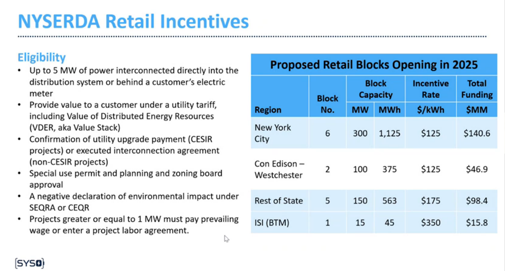
International Perspectives
India's C&I solar sector does not currently qualify for government subsidies available to residential installations. However, businesses benefit from:
- Accelerated depreciation (40% in the first year, reducing tax liability)
- GST benefits (12% on solar equipment with input tax credit availability)
- Net metering and banking policies enabling grid export at favorable rates
- Renewable Energy Certificates (RECs) that can be sold in energy markets
- Power Purchase Agreement (PPA) models and OPEX structures enabling solar deployment without upfront capital
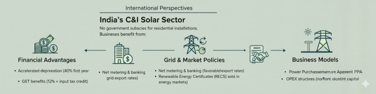
Barriers and Implementation Challenges
Despite compelling economics and policy tailwinds, C&I solar + BESS deployment faces structural barriers that require strategic navigation.
Technical and Design Challenges
Integration of solar + BESS into existing electrical infrastructure presents multifaceted technical challenges:
- System compatibility and interoperability: Legacy building systems, aging electrical infrastructure, and diverse equipment manufacturers require sophisticated engineering integration
- Grid stability and interconnection: Utilities increasingly mandate detailed interconnection studies for larger projects, extending timelines and adding costs
- Load assessment and roof capacity: Determining precise facility loads, roof structural capacity, and optimal system sizing requires comprehensive audits and engineering analysis
Economic and Financing Barriers
Despite improving project economics, financing remains constrained:
- High upfront capital requirements: Even with 30% federal tax credits, C&I systems require significant initial investment that exceeds many businesses' capital availability
- Limited specialized financing: Few financial institutions offer C&I solar + storage financing with flexible terms, favorable underwriting criteria, and risk tolerance appropriate for this emerging asset class
- Tariff design misalignment: Many utility rate tariffs—still designed around traditional consumption patterns—do not adequately compensate distributed battery systems for grid services provided, limiting revenue opportunities
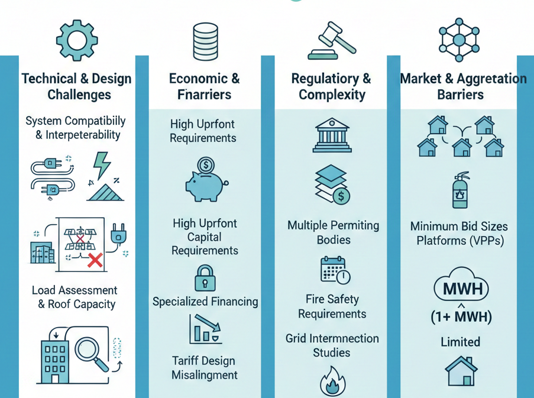
Regulatory and Permitting Complexity
Permitting processes for solar + storage projects often exceed 6 months:
- Multiple permitting bodies (local governments, building departments, fire marshals, utilities) with inconsistent guidelines
- Fire safety requirements for battery installations, still evolving across jurisdictions
- Grid interconnection studies that can be time-consuming and expensive, particularly for larger projects
Market and Aggregation Barriers
Many lucrative electricity markets—day-ahead energy markets, ancillary services, capacity auctions—have minimum bid sizes (often 1+ MWh) that individual C&I systems cannot satisfy. Aggregation platforms that bundle multiple behind-the-meter systems into larger virtual power plants (VPPs) are emerging but remain limited in geographic coverage and operational maturity.
Emerging Trends Shaping the C&I Solar + BESS Sector
Solar-Plus-Storage as Standard Configuration
The integration of solar and storage is rapidly transitioning from an optional add-on to a baseline configuration. Forward-looking C&I projects increasingly bundle PV and BESS from conception, benefiting from co-optimized design, simplified financing, and integrated energy management.
Vehicle-to-Grid (V2G) and Fleet Integration
As commercial vehicle electrification accelerates, fleet operators are recognizing that on-site charging infrastructure combined with solar + BESS enables unprecedented cost control. Emerging V2G technologies enable commercial EV fleets to serve as distributed battery resources during non-operating hours, further optimizing project economics.
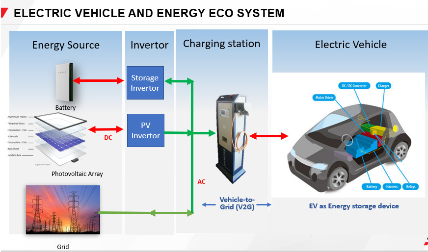
Virtual Power Plants and Aggregation at Scale
Regulatory reforms in markets including the United Kingdom, Germany, and Australia increasingly allow behind-the-meter assets to participate in wholesale electricity markets through aggregators. This trend is expected to accelerate, substantially improving the business case for mid-sized C&I systems (100 kW to 5 MW range) previously unable to access market services.
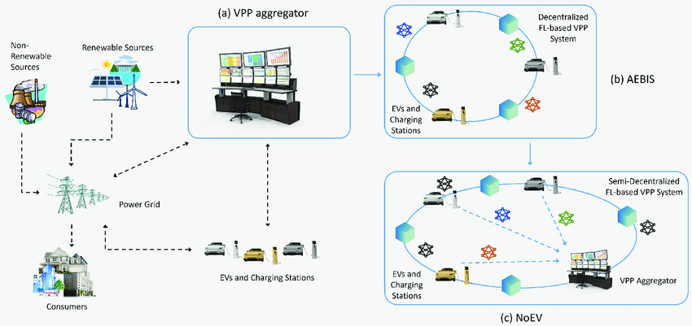
Hybrid Renewable Systems
The combination of solar + wind + storage is becoming the preferred architecture for industrial facilities in regions with complementary renewable resources. These hybrid configurations reduce curtailment, improve capacity factors, and provide superior grid stability compared to single-source renewable systems.
AI-Driven Energy Orchestration at Industrial Scale
The deployment of AI-powered energy management systems across distributed C&I assets—potentially coordinated through aggregators or managed by forward-thinking industrial groups—represents a frontier for unlocking maximum value from renewable + storage infrastructure. These systems can optimize across multiple simultaneous value streams (cost reduction, grid services, equipment reliability) in real time.
Structuring C&I Solar + BESS Projects for Success
For facilities evaluating C&I solar + BESS adoption, strategic project structure dramatically influences financial outcomes and implementation success.
Comprehensive Energy Audit and Load Analysis
Effective system design begins with detailed understanding of facility energy consumption patterns. This requires:
- 12-24 months of interval meter data (ideally 15-minute granularity) enabling load profile characterization
- Identification of flexible loads that can be shifted to off-peak periods through operational changes
- Understanding of peak demand drivers and opportunities for demand reduction through conservation or equipment upgrades
- Assessment of grid interconnection constraints and potential upgrade requirements
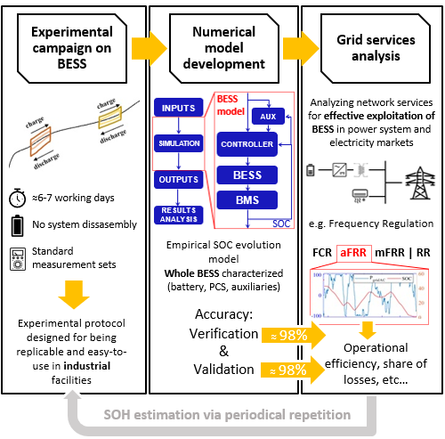
Tariff Optimization and Rate Structure Analysis
Local electricity rate structures fundamentally determine system economics. Project developers should:
- Analyze all available utility rate tariffs, not just current assignments
- Model project economics under multiple tariff scenarios (current, likely future evolution)
- Identify opportunities for demand charge reduction, TOU optimization, and demand response participation
- Consider potential tariff changes, capacity market evolution, and policy developments
Incentive and Financing Integration
Layering available incentives and financing mechanisms substantially improves project returns:
- Maximize federal tax credits through appropriate project structuring and ownership models
- Identify state and local rebate programs, often overlooked but material in aggregate
- Evaluate power purchase agreement (PPA) and energy-as-a-service (EaaS) models as alternatives to outright ownership, enabling installation without large upfront capital
- Structure financing to align with energy cost savings, improving underwriting and cash flow coverage
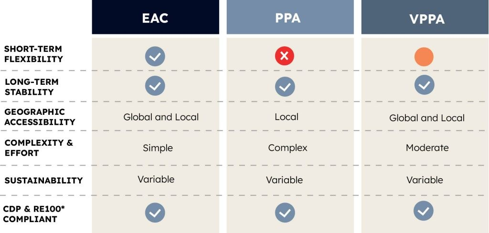
Advanced Energy Management System Selection
The energy management system (EMS) and associated AI optimization fundamentally determine whether systems achieve their projected savings. Project developers should:
- Prioritize systems offering real-time optimization across multiple value streams simultaneously
- Verify optimization algorithms have been validated through independent testing
- Ensure cloud connectivity and cybersecurity measures meet enterprise standards
- Assess long-term vendor viability and software update roadmap

Conclusion: C&I Solar + BESS as Strategic Infrastructure
Commercial and industrial solar + BESS systems have evolved from novelty demonstrations to essential infrastructure for forward-thinking businesses navigating an increasingly electrified, decarbonized energy landscape. The convergence of declining battery costs, maturing software optimization capabilities, supportive policy frameworks, and demonstrated economic performance has created a compelling business case for facilities across industries and geographies.